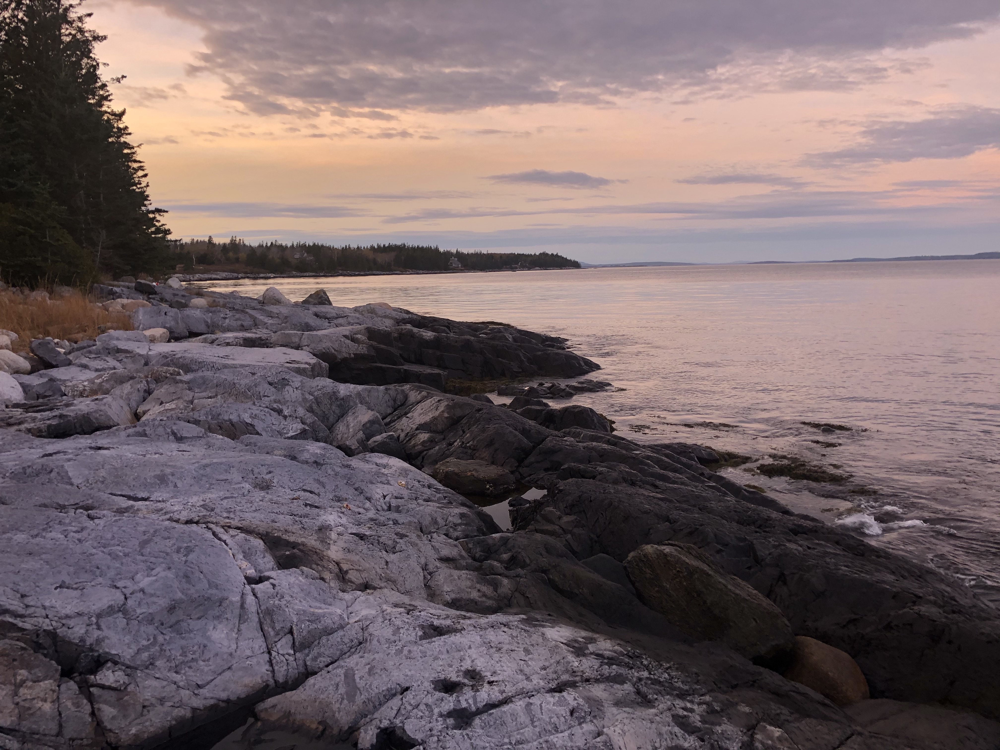
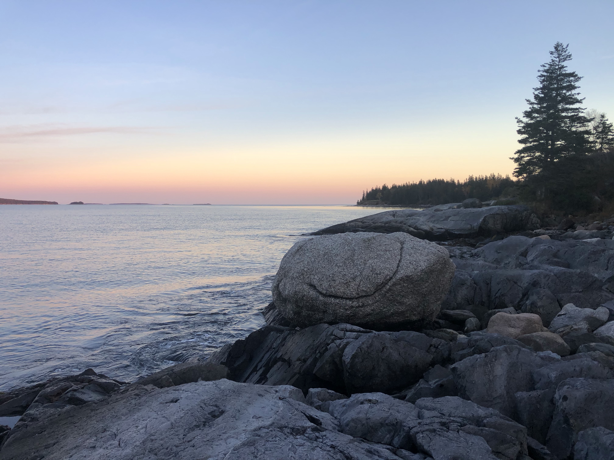
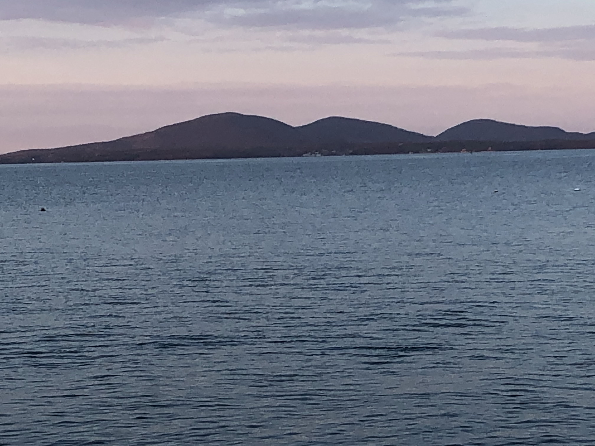
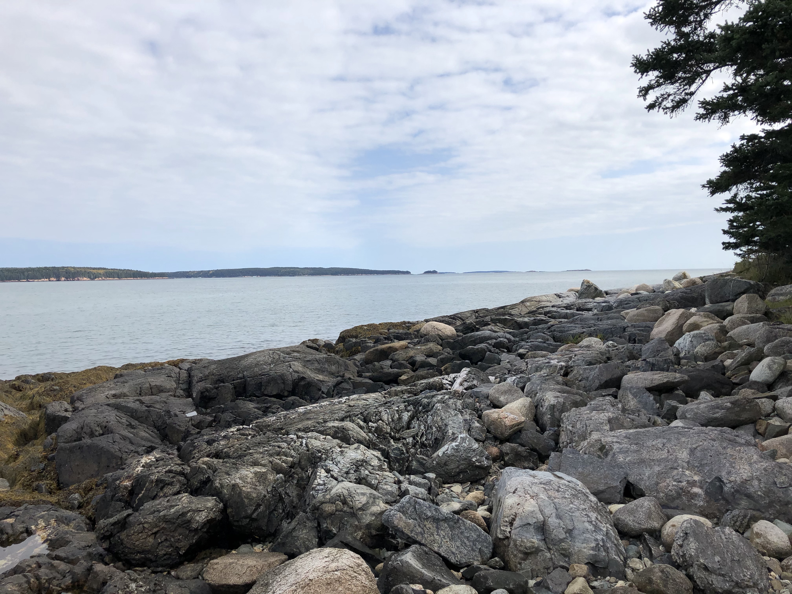
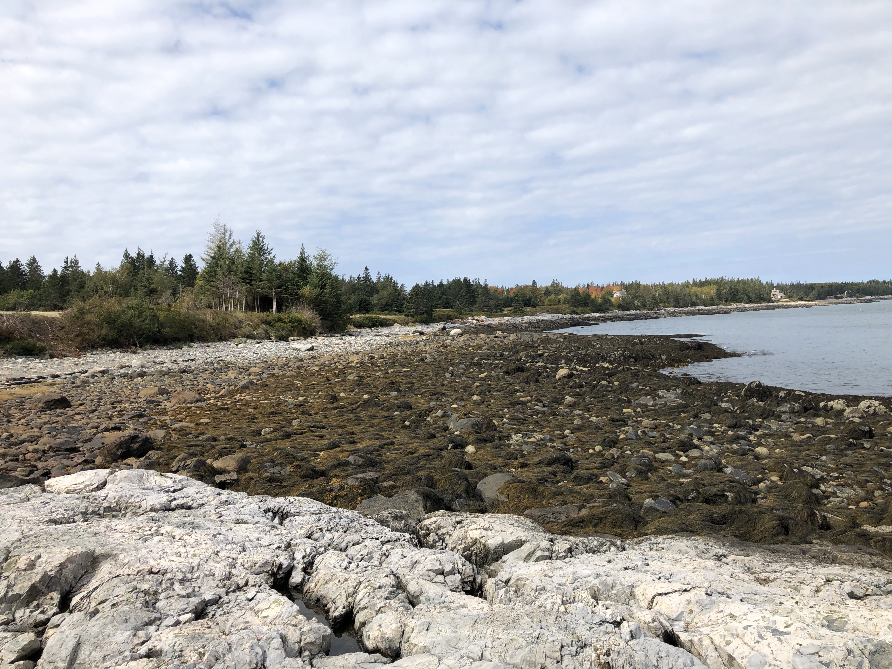
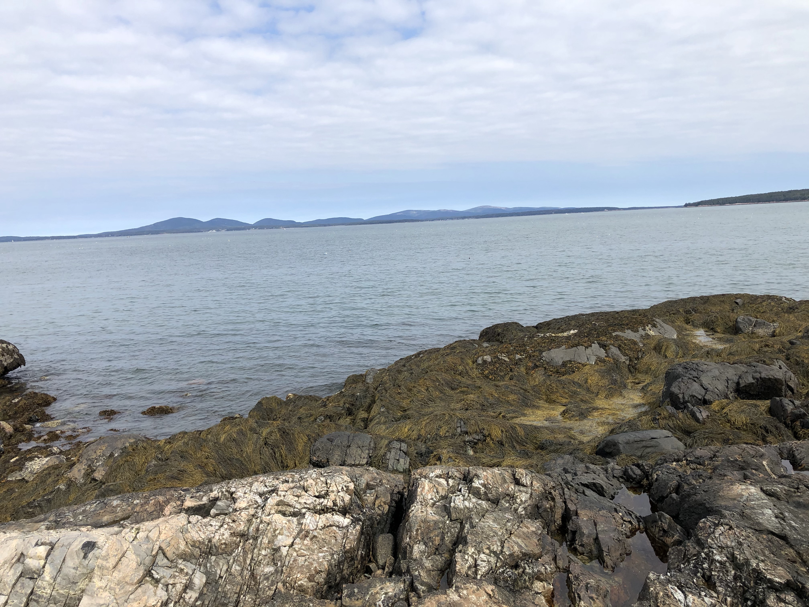
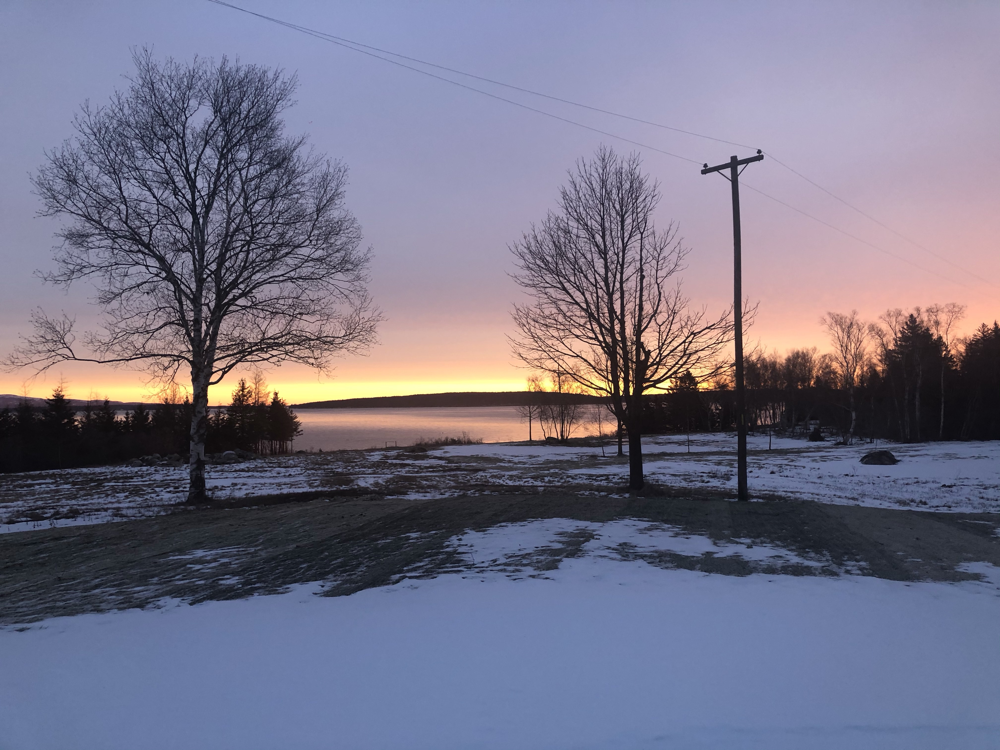
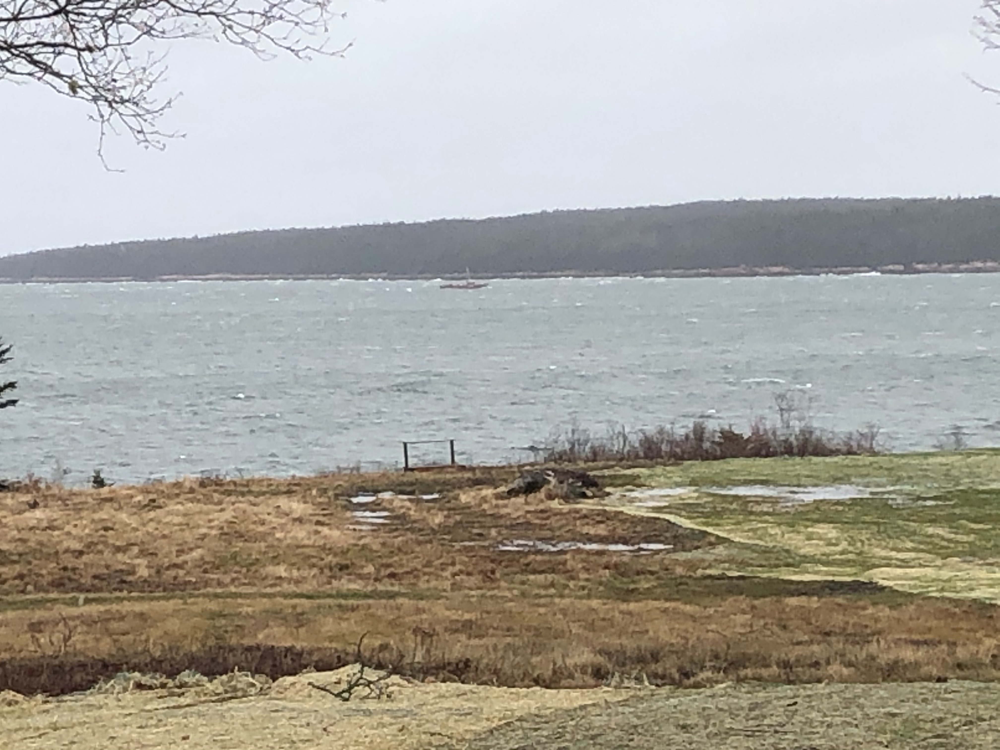
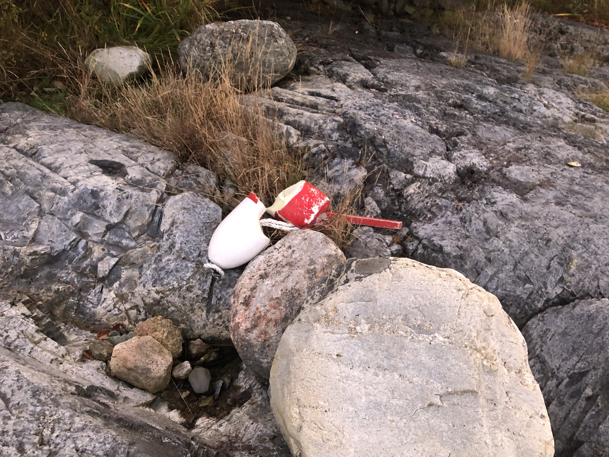
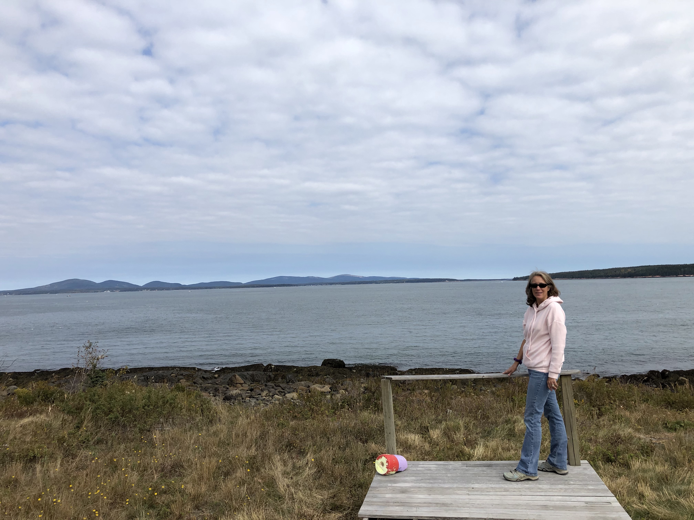

Sunset view to the north, up the coast line.

Sunset view to the south with a distinct feature we named "Smile Rock".

Mountains of Acadia.

Southern view at low tide, looking out at Black island.

Northern view at low tide.

Northeast view toward Acadia.
Land features

Sunrise view across the lawn out to the Eastern passage with Placentia island in background."Sunny's ballast", a twist on Noahs Ballast. In this case the large rocks were deposited by a friend and his excavator rather than by the receding glacier.

A choppy day on the Eastern passage with a boat visble, headed south.

Shipwrecked lobster trap buoy. These show up fairly consistently and we keep a pile under the apple tree.

Platform was the side entry porch on the house and was repurposed as a viewing platform.
Aerial House views
Looking north, up the coastline.Northeast view, over the house and out toward mountains of Acadia.Over the water, looking northwest over the beach, lawn and the house.Closer view of the house.
Aerial Island views
North/Northeast toward Bass Harbor with Placentia island to the right.Southwest over Burnt Coat Harbor with Marshall Island and Isle au Haut visible in the background.
Northwest over Mackerel Cove with ferry terminal visible.Southerly with Frenchboro island visble in background.